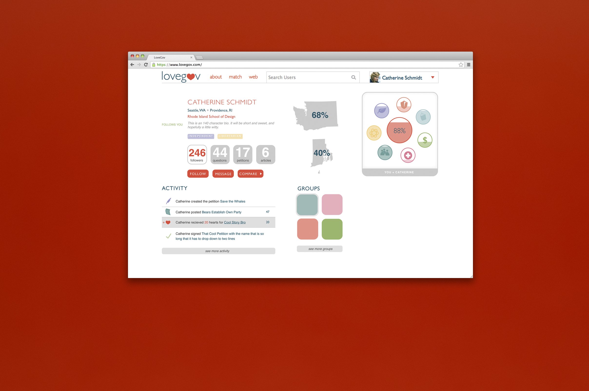
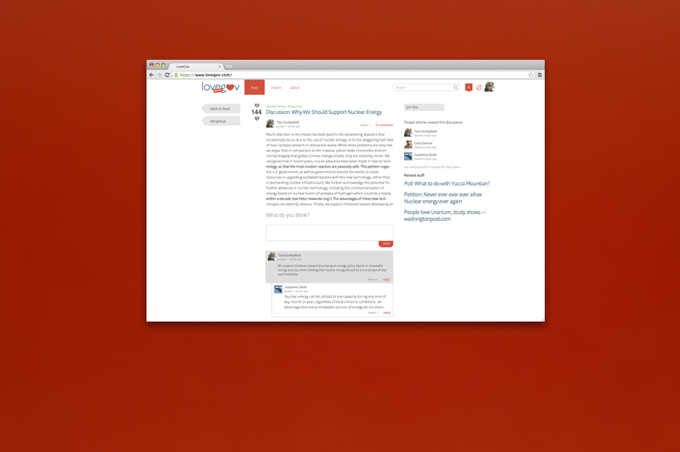
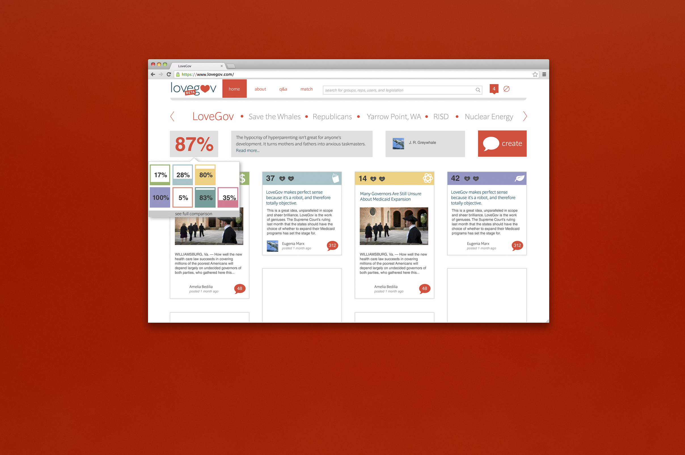
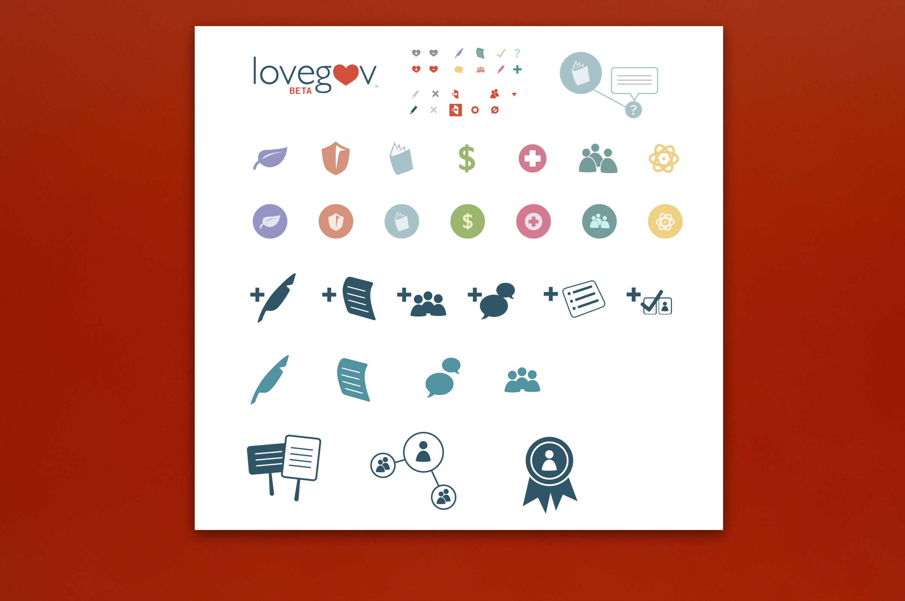
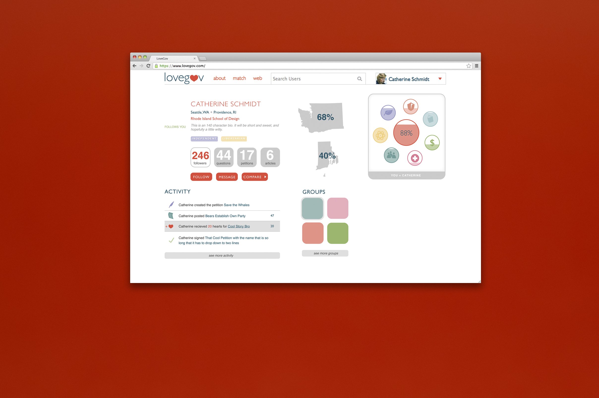
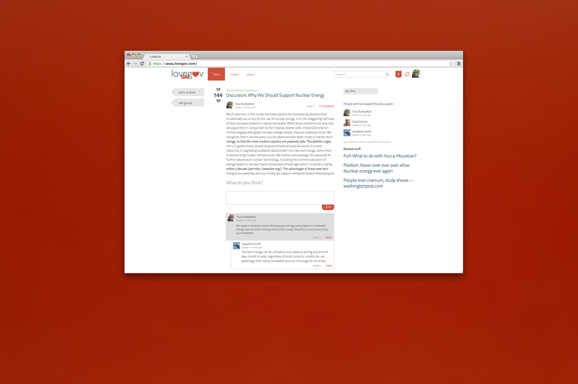
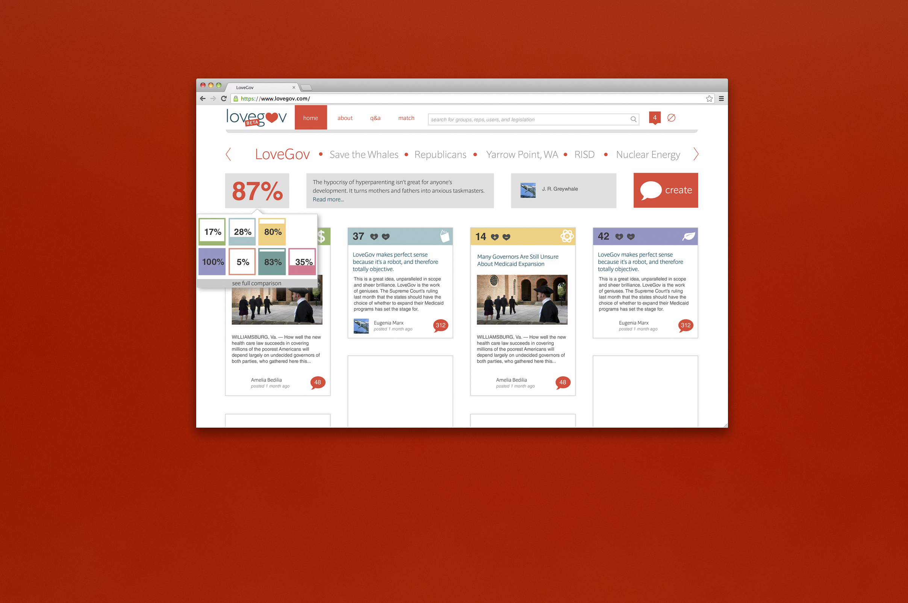
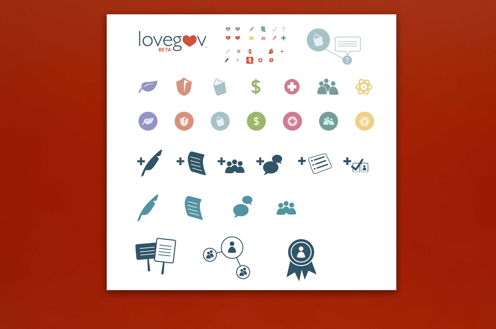

cls / portfolio / lovegov
In the summer of 2012 I joined a team of recent Brown University Computer Science graduates to design build a site to navigate government. LoveGov.com sought to make the workings of government both more accessible and more engaging to a demographic & young adults & increasingly apathetic and befuddled by the election process. LoveGov.com matched users to politicians and other users using a series of questions based on real legislation. Users could track legislation and politicians that were relevant.
I designed an friendly visual identity, including a system of icons to illustrate different voter issues. I was in charge of all interactions on the site. Too, I had to find a way to make a wealth of legislative data both appealing and understandible.
 






